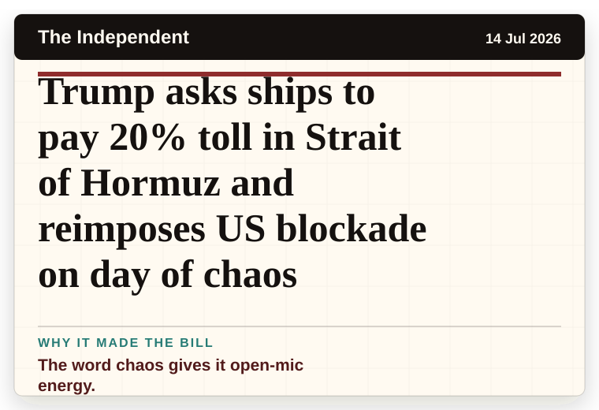
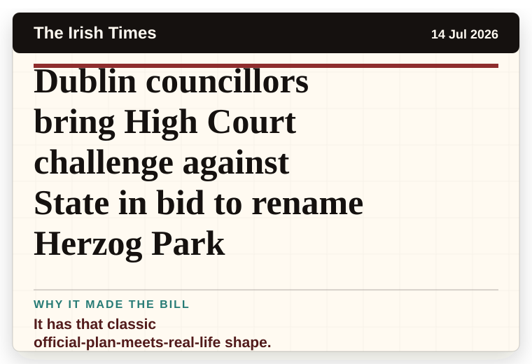
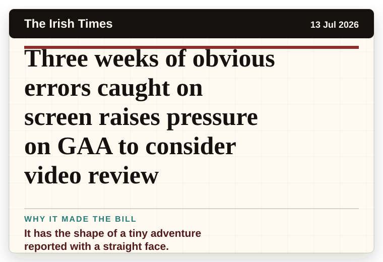
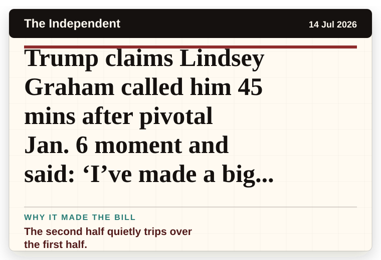

NT News
Australia
Nigel Farage left with unusual challenger after parties withdraw from by-election
The headline is already trying not to laugh.
The latest daily picks, linked back to the original sources. Search the room, pick a source, or follow a headline out to the full story.
Record updated: 14 Jul 2026, 07:51 AM AEST
Showing 15 headline candidates from the refresh run completed on 14 Jul 2026, 07:51 AM AEST.
The headline is already trying not to laugh.

It has the shape of a tiny adventure reported with a straight face.

The headline is already trying not to laugh.

A very ordinary object has wandered into serious news.

The scale is doing deadpan comedy.

A wonderfully specific detail has taken centre stage.

A very ordinary object has wandered into serious news.

A mystery is doing a lot of work in a very small sentence.

A mystery is doing a lot of work in a very small sentence.

The word chaos gives it open-mic energy.

The word chaos gives it open-mic energy.

It has the shape of a tiny adventure reported with a straight face.

It has that classic official-plan-meets-real-life shape.

It has the shape of a tiny adventure reported with a straight face.

The second half quietly trips over the first half.